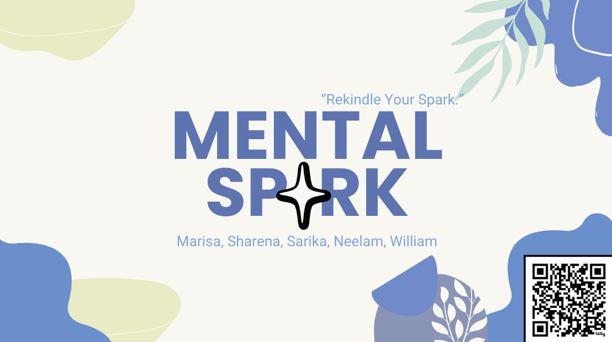
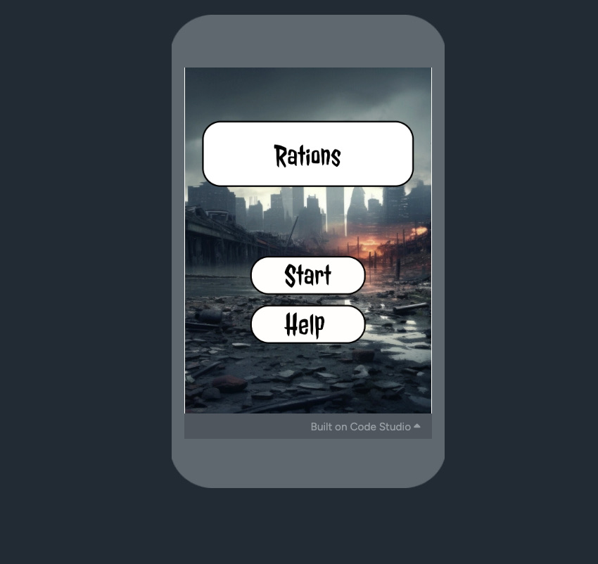

I'm a junior in high school and want to pursue a career in UX/UI design. Use the menu bar to view my work.
HTML - 80%
CSS - 80%
Javascript - 20%
Python - 70%
MentalSpark
MentalSpark was an app that me and my group created to address the social issue mental health for the Infy App competition. Our app was aimed to help those that are struggling with their mental health and 'rekindle their spark'
Rations
Rations was a game that I created for the peaceformers challenge theme for the G4C competition. Rations takes place in an apocolyptic world where the users have to take care of their group by completing quests to obtain resources. Users will have to learn to keep the peace or else they can risk getting booted.